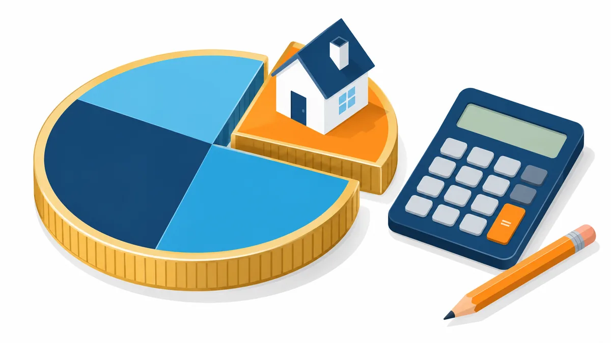

返済負担率の計算方法と年収別の目安。お借入れがある場合の考え方

住宅ローンの相談で最初に出てくる数字が「返済負担率」です。年収に対して年間の返済額がどのくらいの割合かを示すもので、金融機関はこの割合を、既存のお借入れも含めて確認するのが一般的です。この記事では計算式と年収別の目安を示し、カードローンなどのお借入れがある場合に借入可能額がどう変わるかを計算例で確認します。
- 一般的な考え方の整理です。金融機関ごとの基準は公開されておらず、実際の判断は金融機関が行います。
- 計算例の数値は考え方を説明するための仮のものです。実際の金利・条件は金融機関にご確認ください。
返済負担率の計算式
返済負担率は次の式で求めます。
| 返済負担率（%）＝ 年間の返済額の合計 ÷ 年収 × 100 |
ポイントは「年間の返済額の合計」に何が入るかです。これから組む住宅ローンだけでなく、カードローン・車のローン・教育ローン・奨学金・クレジットカードの分割払いやリボ払いなど、現在返済中のすべてのお借入れが含まれるのが一般的です。年収は税込みの額面で見ます。
もうひとつのポイントは、住宅ローン部分の年間返済額を計算するときの金利です。金融機関は、実際に適用される金利ではなく、計算用に高めに設定した金利を使って年間返済額を求めることが多いとされています。そのため、広告で見る低い金利で計算した数字より、金融機関が見る返済負担率は高くなります。
年収別の目安
多くの金融機関は、返済負担率の上限を年収帯ごとに決めています。目安として 30〜35% 程度を上限とする例が多く、年収が高いほど上限が高くなる傾向があります。上限を 35% とした場合の年間返済額と月額の目安は次のとおりです。
| 年収 | 年間返済額の上限（35%） | 月額に直すと |
|---|---|---|
| 300 万円 | 105 万円 | 約 8.8 万円 |
| 400 万円 | 140 万円 | 約 11.7 万円 |
| 500 万円 | 175 万円 | 約 14.6 万円 |
| 600 万円 | 210 万円 | 約 17.5 万円 |
この月額は「住宅ローンを含むすべてのお借入れの返済に使える上限」です。既存のお借入れがあれば、その分が差し引かれます。
計算例: 年収 400 万円でカードローンの返済が月 2 万円ある場合
- 年間返済額の上限は 400 万円 × 35% ＝ 140 万円。月額で約 11.7 万円。
- カードローンの返済 月 2 万円を差し引くと、住宅ローンに使えるのは月 約 9.7 万円。
- 計算用の金利を年 3%、返済期間 35 年とすると、100 万円あたりの月々の返済額は約 3,850 円。
- 9.7 万円 ÷ 3,850 円 × 100 万円 ＝ 約 2,500 万円が、住宅ローンの借入額の目安。
カードローンの返済がなければ、11.7 万円 ÷ 3,850 円 × 100 万円 ＝ 約 3,000 万円です。月 2 万円の返済があるだけで、目安が 500 万円ほど変わることが分かります。
この差が、既存のお借入れを住宅の取得と合わせて整理する考え方の出発点です。お借入れを住宅ローンに集約できれば、毎月の返済額の合計が変わり、検討できる範囲が動く可能性があります。ただし、まとめられる金額には上限があり、対象外のお借入れもあります。仕組みは こちらのコラム、商品の条件の見方は こちらのコラム をご覧ください。
返済負担率を下げる方法
1. 使っていない契約を整理する
残高がゼロでも、カードローンの契約が残っていると、限度額まで借りられる状態として見る金融機関があります。使う予定のない契約は解約を検討する余地があります。
2. 手元資金で一部を先に整理する
完済すれば毎月の返済負担は下がります。ただし手元資金が減ると、頭金や諸費用に影響します。どちらが有利かは状況によるため、完済前に一度ご相談いただくことをおすすめします。
3. 返済期間と物件価格を調整する
返済期間を長くすると毎月の返済額は下がりますが、総支払額は増えます。物件価格を見直す選択肢も含めて、毎月と総額の両方で無理がないかを確認します。
4. 収入の見方を確認する
ご夫婦の収入を合わせて見る方法や、雇用形態ごとの収入の見方は金融機関で異なります。ご自身の場合にどう見られるかを確認すると、目安が変わることがあります。
自分で計算するときの注意
- 年収は税込みの額面。手取りではありません。
- 返済額の合計には、リボ払い・分割払い・奨学金も含めて考える。
- 計算用の金利は実際の適用金利より高めに置く。
- 結果は目安であり、金融機関の判断を保証するものではありません。